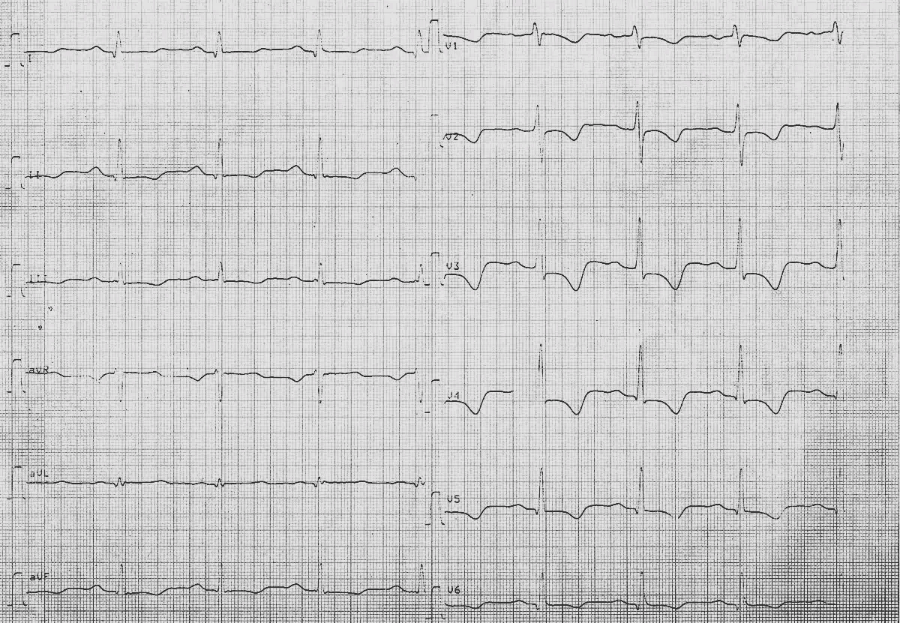
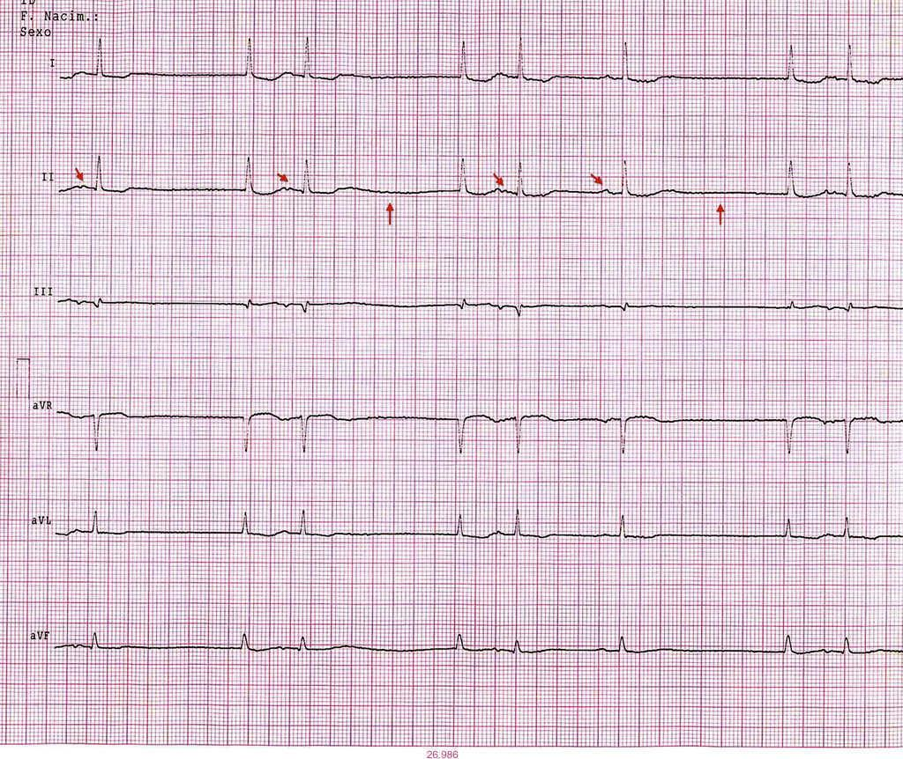
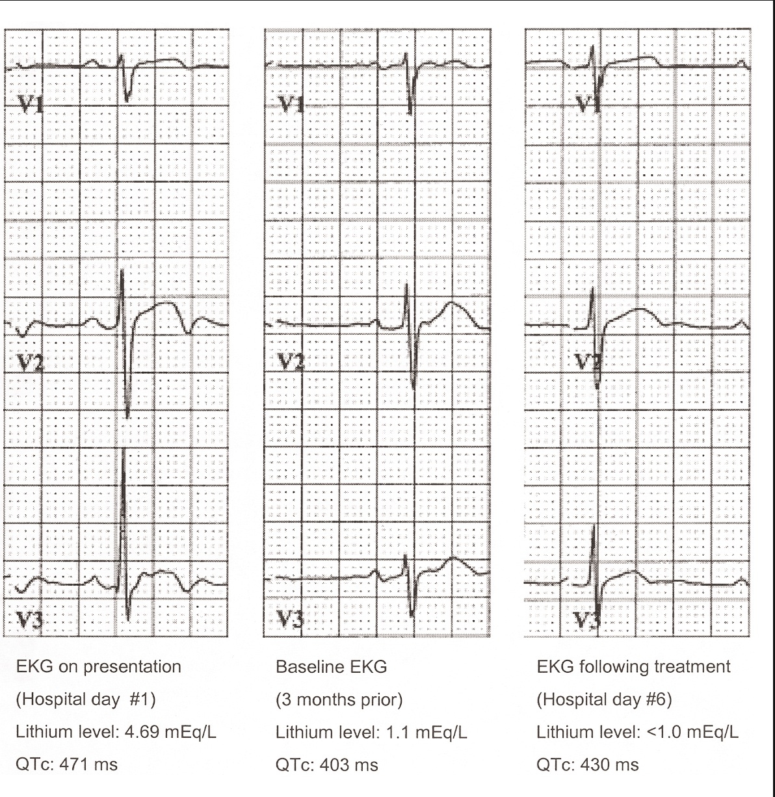

What is the probably diagnosis?
Which THREE of the following are common precipitants of this patient's conditions?
Which THREE of the following medications can precipitate this patient's condition?
If this patient were to become pregnant, of what malformation would the fetus be at risk?
Which investigations would be appropriate to perform in this patient? Select all THREE that apply
After stopping their medication, in what TWO other ways might this patient be managed?

Flattened T-waves, prolonged QT, sinoatrial block, PR prolongation.
Which THREE of the following are indications for prescription of Lithium?